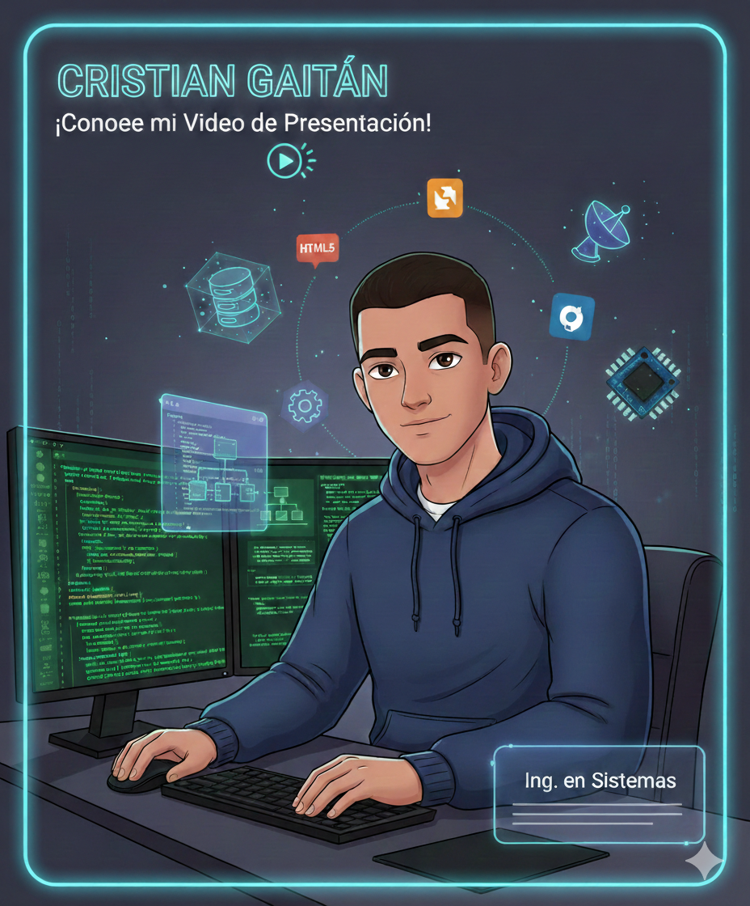

Disponible para nuevos retos
Cristian Gaitán
Ingeniero en Sistemas | Desarrollador ADSO
Sobre mí
Enfocado en la intersección del diseño y la tecnología. Experto en maquetación con altos estándares de documentación y dominio del flujo Git profesional.
Formación Especializada
Conocimientos adquiridos bajo la mentoría del Instructor Fabian Barreto:
- Metodologías Ágiles
- Estándares de Codificación
- Lógica de Programación Avanzada
Stack Tecnológico
Trayectoria Académica
2024 - Presente
Ingeniería en Sistemas
Quinto Semestre
SENA
Tecnólogo ADSO
Análisis y Desarrollo de Software
Certificado
Bachiller Técnico
Sueños y Metas
- Tener una familia
- Libertad económica
- Empresa propia
- Viajar por el mundo
Video de Presentación
Clic en la imagen para ver video
